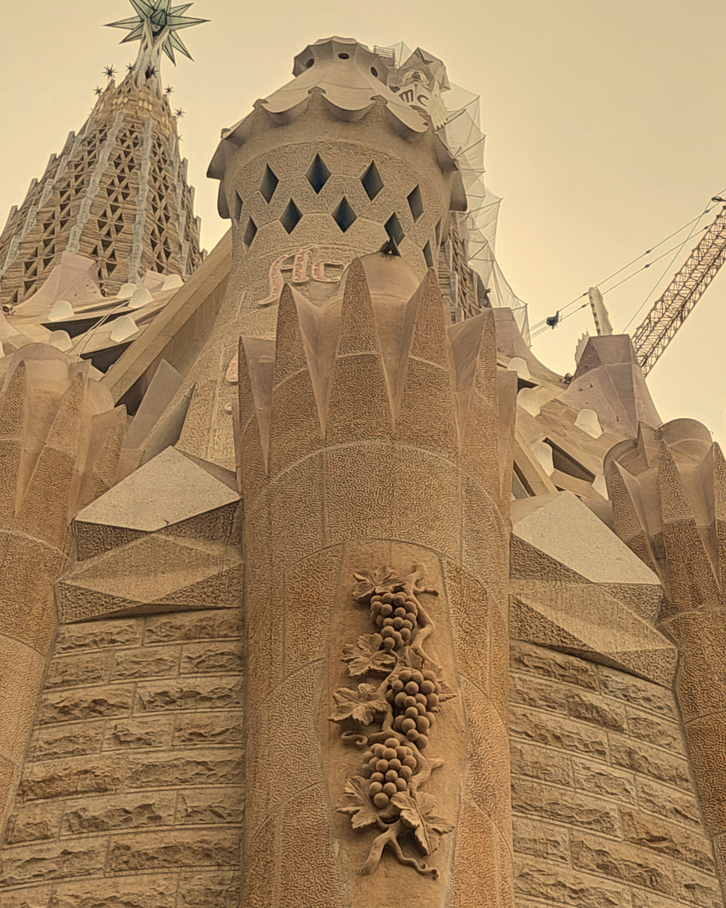
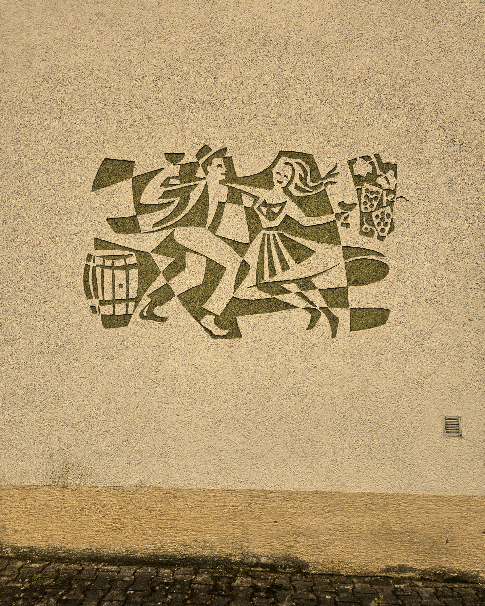
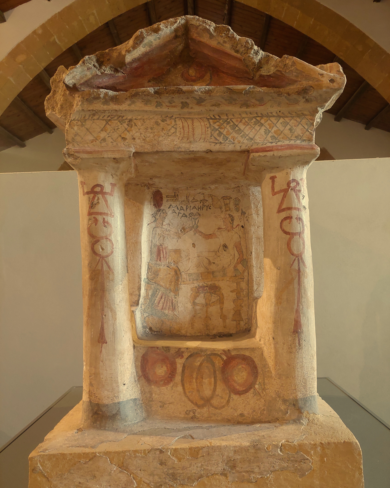
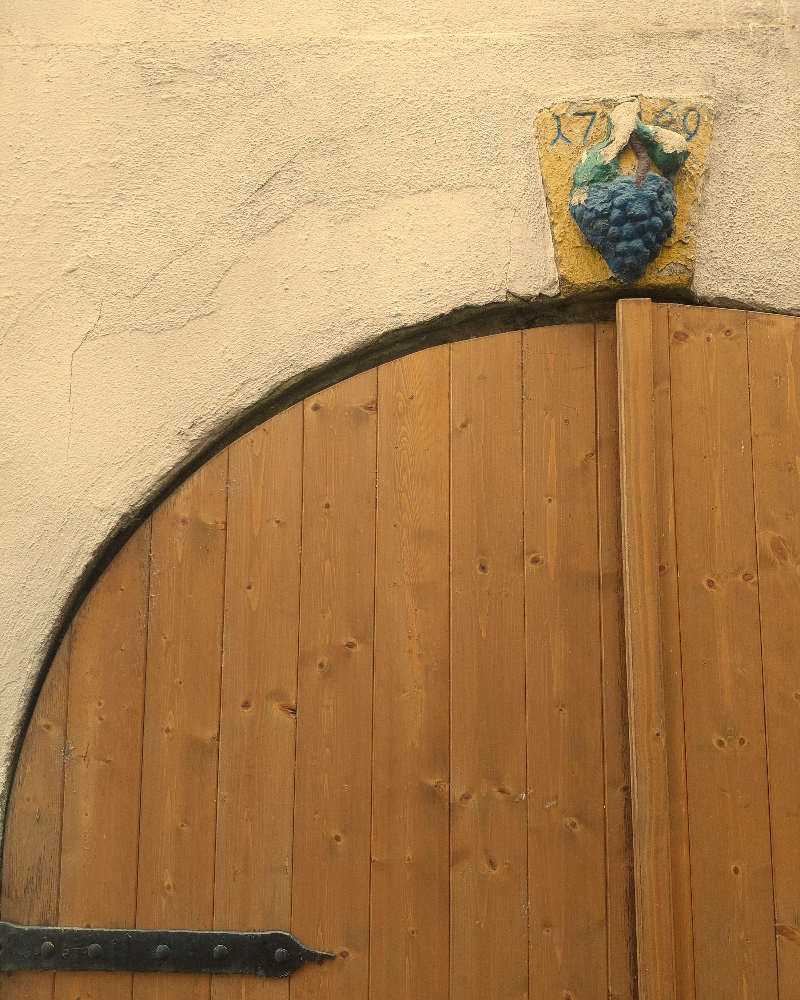

A grape-covered column in a cultural center in Bilbao. A carved cluster hanging from the stone skin of Gaudí's Sagrada Família. A bronze bear clutching grapes in an Alsatian village square. A painted tile above a cellar door in Esslingen, dated 1702.
Wine imagery is everywhere — not only in paintings guarded behind velvet ropes, but in the overlooked surfaces of places shaped by viticulture. It appears on façades and fountain spouts, cathedral towers and village walls, woven so deeply into daily life that it often disappears into the background.
Most people pass without noticing.



Along the Camino de Santiago, pilgrims stop at Fuente de Irache, where two taps emerge from the wall: one pours water, the other wine.

In Bruchsal, dancers carrying a wine barrel are painted directly onto a building's plaster. In Marsala, traces of ancient wine rituals still linger on the stones of an altar shaped millennia ago.




The images travel across centuries. They migrate, persist, and quietly endure.
Hidden in plain sight, they wait for someone to look up.